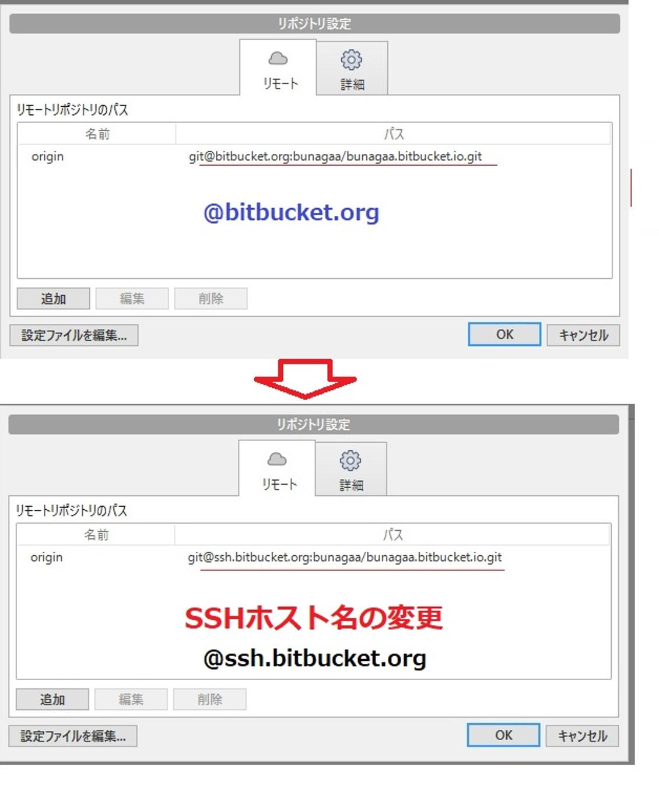

うるがいの話 ある日
最新: ＳＳＨホスト名の変更【うるがいの話 ある日】とは 一日だけのプログです
『うるがいの話』の最新一日だけのプログで、通信料が少なく経済的だ。カニの画像をクリックすると全ての日付が載る『うるがいの話』サイトを表示します
|
|
【うるがいの話】 うるがい(ｳﾙｶﾞｲ urugai)とは、『もずくがに』の名前でとても大きくなります。 |
|---|---|
|
|
【カミマヤーの話】 猫のことを方言でマヤーといいます。カミマヤー（kamimayaa）とは、神の猫のことです。 |
|
【たながぁの音楽】 たながぁ（ﾀﾅｶﾞｰ tanagaa）とは手長えびのことで、何種類かあり大きいのは車 エビぐらいになります。 |

|
【ぶながぁの話】 ぶながぁ(ﾌﾞﾅｶﾞｰ bunagaa)とは、赤い髪の毛、赤い身体、そして身長は１ｍ２０ｃｍ ぐらい、川の蟹を食べているの目撃された。場所は沖縄県国頭郡大宜味村のと ある村僕の隣近所に住んでいる爺さんから、聞いた話です。 |
|
|
【ギーマの話】 ギーマ(giima)とは、山原の里山に咲くスズランに似た、 花を付けます。実は食べられます、 気が付くと口の周りが紫になっています。 |
2026年11月12日 (木）ＳＳＨホスト名の変更
15:05
SSH接続の中断を避けるため今すぐ設定変更を行ってください
うるがい 様
Bitbucketでは、2026年11月12日より、SSHホスト名を
「bitbucket.org」から「ssh.bitbucket.org」へ変更いたし
ます。接続エラーやサービスの中断を防ぐため、この期日まで
に設定を更新していただく必要があります。
この変更は、SSHを利用しているユーザーにのみ影響します。
HTTPS経由でBitbucketに接続している場合、対応は不要です。
引き続き接続を利用できるよう、2026年11月12日までに以下
の手順を完了してください。
1.`~/.ssh/known_hosts` ファイルを更新し、新しいホスト
名「ssh.bitbucket.org」を反映させてください。
2.Bitbucket上のリモートリポジトリURLを、新しいホスト名
を使用した形式（例: `git@ssh.bitbucket.org:workspace
/repository.git`）に更新してください。
3.SSH経由のGit操作を含むCI/CD自動化設定において、
Bitbucketのホスト名を「ssh.bitbucket.org」に更新して
ください。
は？、分からん（元々は英語ですヨ）。この対応しなければ、
ユーチューブ動画のダウンロードのデータが、提供できなく
なってしまう。で、エーアイを頼る
1.`~/.ssh/known_hosts` ファイルを更新し、新しいホスト名
「ssh.bitbucket.org」を反映させてください。
とありますが、どういうことでしょう
C:\Users\<あなたのユーザー名>\.ssh\
のフォルダに
known_hosts
がありません
・・・・以下省略

対応できました、エーアイが無ければ無理でしたね。バイトの
作業の手順書ありません！、研修資料を何度もみたがないです
。コドモからの作業手順は全て口頭です、そのため高齢者の親
父は、ただいま手順書を作成しています。